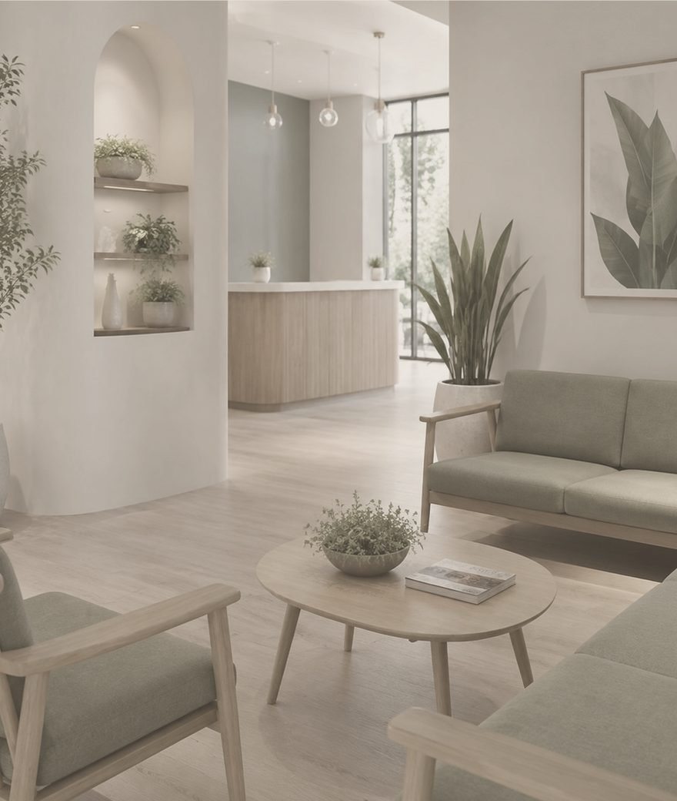
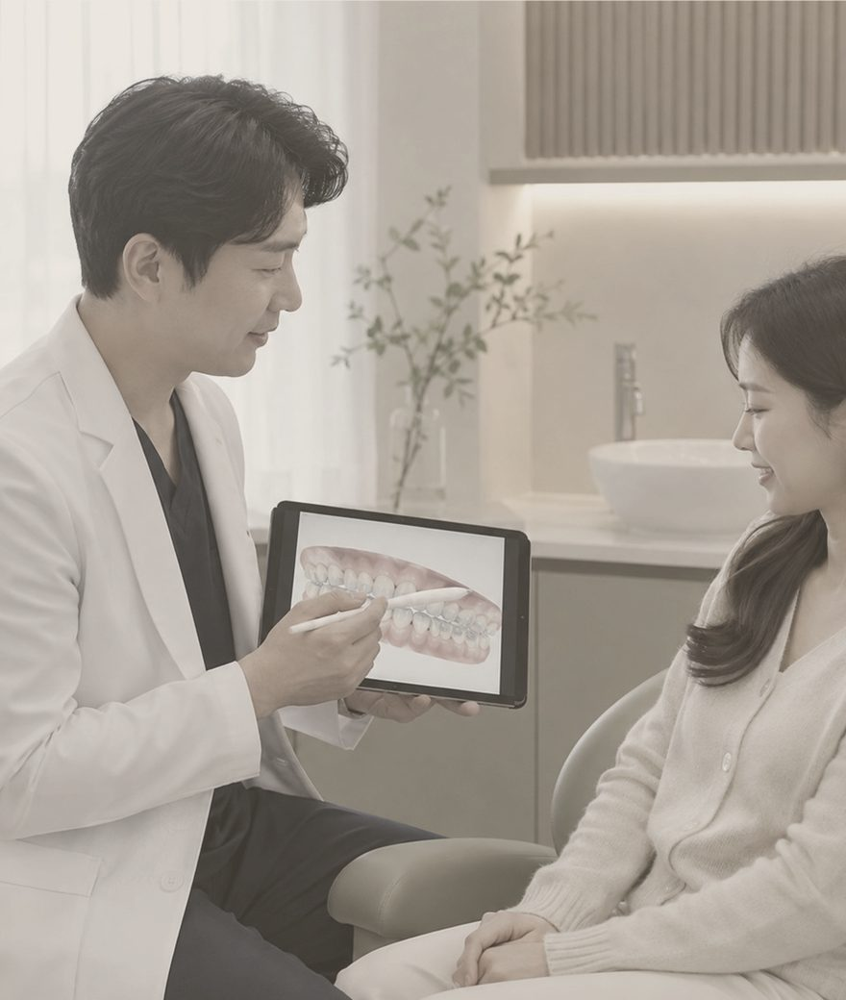

GYEOL
:
ON
CLINIC
의원 소개
WAVE 30
컨투어 주사
◎ KOR
CONTACT
●
◎
▶
↑
GYEOL:ON CLINIC SPACE
편안한 상담과 섬세한 시술을 위해,
쾌적하고 프라이빗한 진료 환경을 준비했습니다.
방문하시는 순간부터 진료를 마치는 시간까지
온전히 편안할 수 있도록 공간 하나하나를 구성했습니다.
SPACE 01
SPACE 02
SPACE 03
SPACE 04
SPACE 05
SPACE 06


←
01
/ 06
→
RESERVATION
한 분을 위한 충분한 시간,
예약제로 운영합니다.
상담부터 시술 계획까지 전담 의료진이 차분히 안내합니다.
예약 안내 보기